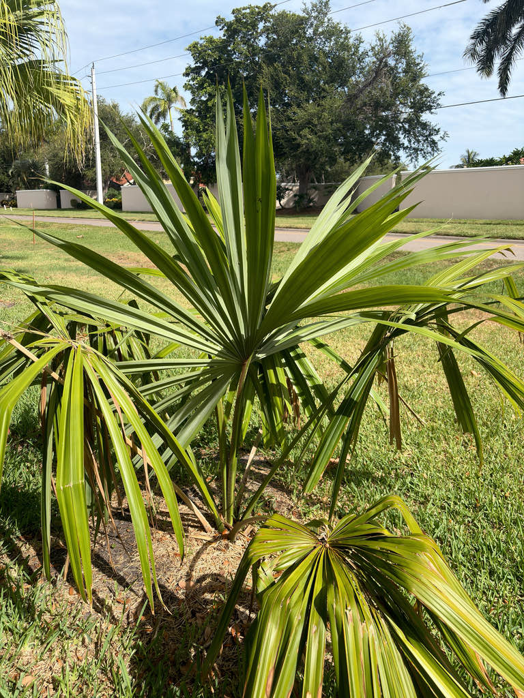

- When a frond dies on this palm, the base does not fall cleanly away. The stub breaks off partway up the petiole, clings to the trunk, and stays green for years — giving mature trees a distinctive shaggy, boot-covered upper trunk you can see from across the garden.
- In Belize this palm is called the Bay Leaf Palm, and its fronds were once the traditional roofing material of Maya villages in the north of the country. Each frond is squeezed into a broom-shaped bundle and laced through roof rafters — a technique still practiced today. The name changes as the tree does: a young plant is bayleaf, but the same palm full-grown is Botán.
- The species name mauritiiformis means 'resembling Mauritia,' a reference to the similar-looking fronds of Mauritia flexuosa, the moriche palm of South America. Botanists thought the large, deeply divided leaves looked close enough to name this species after them.
- Its flowers are both male and female on the same bloom, but the palm typically cannot fertilize itself — pollen from a separate tree is required to set seed. In Colombia, stingless bees (Meliponini) were documented as the principal effective pollinators.
Native from southern Mexico south through Belize, Guatemala, Honduras, Costa Rica, and Panama, and into northern South America including Colombia, Venezuela, and Trinidad.
It grows from sea level to roughly 3,300 feet, turning up in humid forests, open savannas, disturbed clearings, and along riverbanks — sometimes as the dominant palm across large stretches of landscape.
It is not native to Florida or anywhere in the United States. It arrived in Florida cultivation as a tropical ornamental, valued for its elegant proportions and its close kinship with the sabal palms that Floridians already know.
- Across its native range, this palm has long been a building material of the first order. In the Colombian Caribbean, the fronds of Sabal mauritiiformis are documented as the single most-used natural thatching material for traditional houses — harvested, folded, and overlapped in layers thick enough to shed tropical downpours.
- That harvest tradition continues today and is significant enough that researchers study it as a model for sustainable use of a wild palm resource. In Belize, overharvesting has become a real concern: bayleaf palms have been removed entirely from parts of the forest, making a traditional thatch roof more expensive to build than a zinc one.
- In Florida cultivation, young palms grow slowly while establishing, but growth accelerates once the trunk begins to rise. The species is agreeable in Florida's sandy, often alkaline soils — it tolerates a wide range of pH and drainage conditions, and established trees handle periodic dry spells without obvious stress.
Like other members of its genus, the Belize Thatch Palm produces day-blooming flowers with a sweet, musky fragrance and nectar that bees find reliably attractive. Research on Sabal mauritiiformis specifically has confirmed bee visitation and documented the pollination biology of its hermaphroditic flowers, with stingless bees (Meliponini) identified as the principal effective pollinators.
After flowering, the palm sets small, pea-sized black fruits in branching clusters. Across the genus, Sabal fruits are consumed and dispersed by birds and small mammals — seed dispersal is almost entirely animal-driven.
Propagation is by seed only. The flowers are hermaphroditic — each individual flower has both male and female parts — but the species is self-incompatible, meaning it cannot fertilize itself. Cross-pollination between separate trees is required to set fruit. Seeds germinate in one to three months under warm, moist conditions.
Small, whitish, and individually modest, but produced in enormous branching inflorescences that arch beyond the crown and can exceed the length of the leaves. Flowers are fragrant and day-blooming: pollen is released in the morning, while the stigmas become receptive later in the morning into early afternoon. Bees are the primary pollinators.
Small pear-shaped to round drupes ripening from green to glossy black, roughly pea-sized. Each fruit contains a single seed. The clusters are produced on the same arching stalks as the flowers, which bend further under the weight of fruit as they mature.
Large fan fronds with a stiff central rib that bows each blade into a gentle curve, reaching five feet or more across. The upper surface is bright green; the underside has a distinctive silvery-glaucous cast that is visible from a distance. Petioles are long and notably sharp-edged — worth being careful around when working close to the crown.
Solitary, slender, and marked with closely-spaced annular leaf-scar rings. The base is noticeably swollen — a characteristic shared across the species. Young trunks are greenish; mature trunks turn grayish-brown. Old frond stubs remain attached on the upper trunk where fronds broke off partway down their stalks, giving the crown zone a shaggy texture.
Start at eye level and look straight up into the upper trunk — that is where you will find the stubby green petiole remnants clinging to the bark where old fronds broke off partway down their stalks. Then scan the base for the distinctive swollen trunk and the closely-ringed leaf scars below it.
Finally, look up into the crown: large, arching fronds with bright green tops and a noticeably silvery underside. If the palm is in bloom or fruit, the branching clusters extend visibly beyond the outer fronds.
The petioles on this species are notably sharp-edged — take care when working close to the fronds, and keep children from grabbing the leaf stalks.
Sabal mauritiiformis is rated IUCN Least Concern (IUCN 3.1, 2022).
This species is worth comparing with the park's native Sabal palmetto specimens. The Belize Thatch Palm is noticeably taller and more slender-trunked than its Florida cousin, with a glaucous frond underside and a narrower overall silhouette. Side by side, the family resemblance is clear — and so is the difference that separate evolutionary paths can produce.


- © Ruby Meador (CC-BY-NC), via iNaturalist